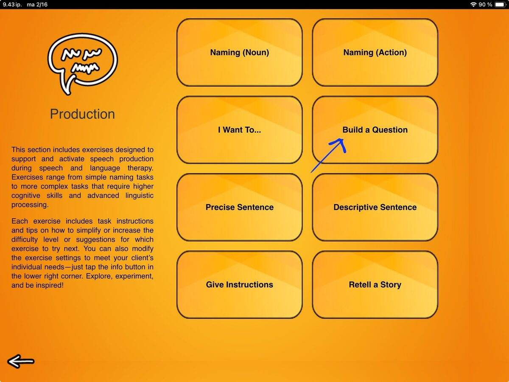
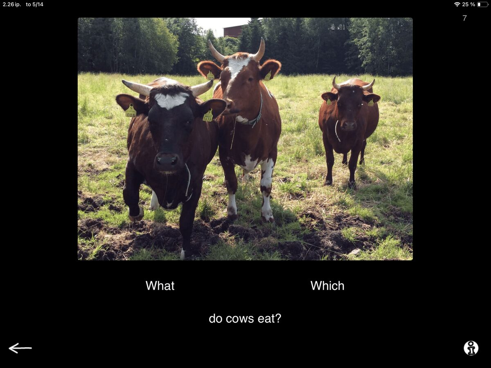
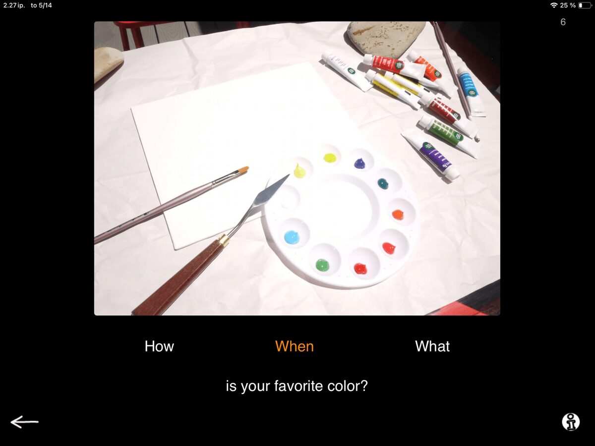
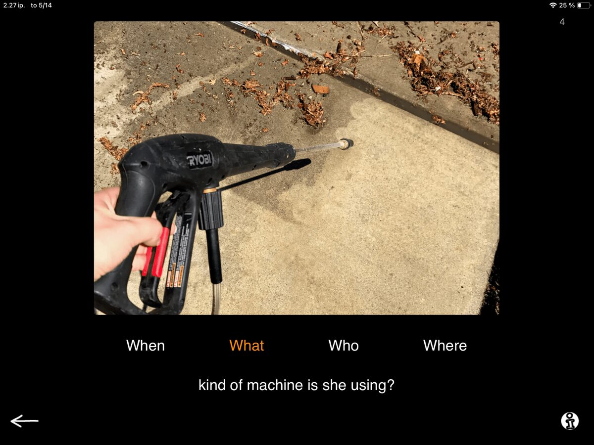

Questions are a powerhouse for everyday communication and connection. They help us show interest, seek information, clarify meaning, repair misunderstandings, and take a more active role in conversations overall.
Working on questions can be especially important for many people with communication difficulties. As we discussed in the previous post, some challenges can partly stem from difficulty getting started: not only with speech, but with the whole action of initiating communication. And asking questions requires a lot of initiative!
A question begins with curiosity: noticing that there is something we want to know. Then we narrow our interest down to a specific piece of information and make the decision to initiate an action to ask. And this happens in the background before we get to the more visible part: formulating the question itself and taking the conversational turn to ask it.

The Build a Question task provides a tool for familiarizing the client with different types of questions and constructing them in a structured way.

On screen, you see a picture, a sentence frame, and several possible question words. In this first example, the picture shows some cows in a field. Under the picture, the sentence fragment says:
… do cows eat?
The options presented are: What? and Which?
And you guessed it — the task is to select a suitable question word to complete the question. The number of options can be adjusted according to the client's needs, as shown in the next examples.

Task with a wrong answer selected

Task with the correct word selected
In these examples you may also notice that selecting a question word simply changes its color to orange, regardless of whether it is a suitable or unsuitable word for the sentence. So no feedback from the app? How is this helpful? How will they know if their selection is correct?
Glad you asked! No automated feedback means that the task does not end with the selection. After your client makes a selection, you have the freedom and flexibility to evaluate and discuss the task together.
You can start by asking them to read the completed question aloud. For example: What do cows eat? vs. Which do cows eat? This makes the task nicely multimodal: the client looks at the image, reads the sentence and options, makes the selection, and hears the completed question, all of which support the processing of information and meaning as well as self-monitoring and correction. After making their selection, they can verify the answer themselves with your support, or try again if needed to get it right.
Your job as the therapist is to support the process. You can guide the client by asking questions: Does the question sound right? Does it make sense? You can also ask: Is the question easier to understand when you see it on screen with the picture, or when you hear it out loud? How about when the question is written on paper? Is it easier to process when you also see it as a full sentence?
This is where you can make connections to real-world situations. What kind of support does the client benefit from the most? How can they seek that support in their everyday life?
If they are ready for a challenge, you can continue with questions like: What information are we seeking with this question? What kind of answer would it lead to? What is the answer?
So. Many. Questions. All of them provide an angle for supporting the client and help them think about and start formulating questions in various scenarios. This is the versatility of SanapsisPro at its best.
So, although the task format is simple, it can open the door to many useful therapy moments: reading, listening, reasoning, self-monitoring, and conversation. More importantly, it gives the client supported practice in one of the most active parts of communication: noticing that something is missing, becoming curious, and taking the initiative to ask.
That is a powerful skill to build — one question at a time.